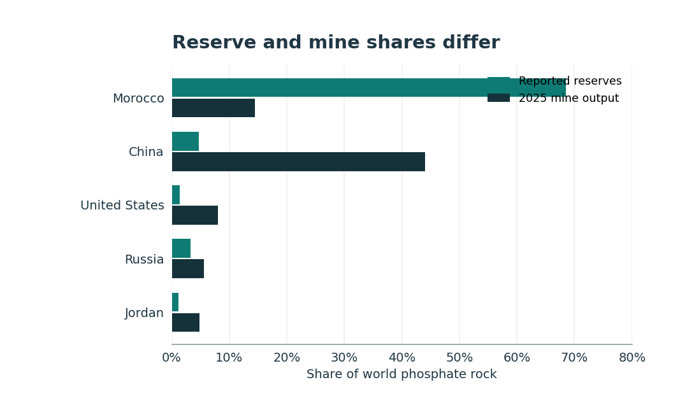
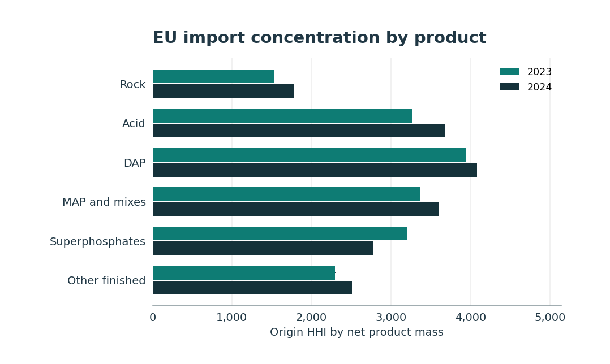
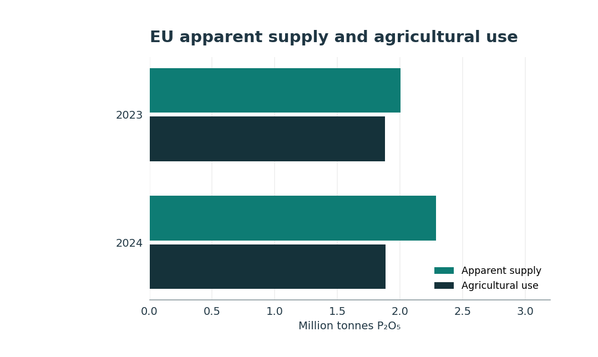
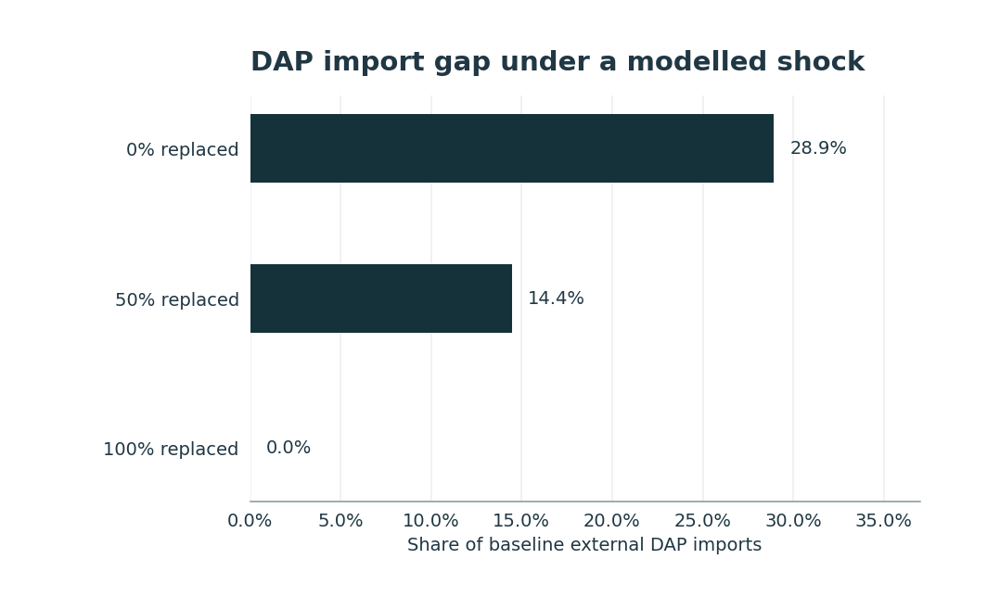

Finding. Morocco held 68.5% of the phosphate-rock reserves reported by USGS and supplied 14.4% of 2025 mine production. By net product mass, Moroccan origin accounted for 28.4% of EU-27 external imports of natural phosphates and 57.8% of imports of diammonium phosphate (DAP) in 2024. Reserves, mine output and import origins describe different dependencies. USGS, Phosphate Rock. Eurostat Comext.
Phosphorus is essential to plants. Phosphate rock is the principal primary input for mineral phosphate fertilizers. Plants can also draw on phosphorus already in the soil, and on manure and recycled materials. The amount available varies with local conditions. One study finds that soil stocks and domestic rock reserves could soften the effect of a fertilizer trade disruption. Barbieri et al. (2022).
Reserve geography differs from mine output
USGS reports 73 billion tonnes of reserves and estimates 250 million tonnes of 2025 production. China accounted for 44.0% of mine output and 4.7% of reported reserves. Its production figure covers large mines. USGS reports no imminent global shortage of phosphate rock. Reserves estimate what can be extracted economically under current conditions and change with prices, knowledge and technology. USGS, Phosphate Rock.
The 2026 table labels the reserve entry “Morocco” and gives no separate Western Sahara figure. A USGS yearbook previously reported the two together. The comparison uses the 2026 table as published. USGS editions up to 2021 labelled the same 50 billion tonnes “Morocco and Western Sahara”. The 2026 table does not allocate the estimate between territories; the yearbook puts the Bou Craa deposit at 800 million tonnes, about 2% of the total. USGS Minerals Yearbook, Morocco and Western Sahara.

The reserve Herfindahl–Hirschman Index (HHI) is 4,784 to 4,786 points. The mining HHI is 2,382 points. HHI sums squared shares on a scale from zero to 10,000. These bounds use summed table entries and vary the allocation of the grouped “other countries” row. Shares in the table use the published world totals.
All individually reported countries
| Country | Reserves | World reserve share | Mine output | World output share |
|---|---|---|---|---|
| Morocco | 50,000.00 | 68.5% | 36.00 | 14.4% |
| China | 3,400.00 | 4.7% | 110.00 | 44.0% |
| Egypt | 2,800.00 | 3.8% | 5.50 | 2.2% |
| Tunisia | 2,500.00 | 3.4% | 3.30 | 1.3% |
| Russia | 2,400.00 | 3.3% | 14.00 | 5.6% |
| Algeria | 2,200.00 | 3.0% | 2.00 | 0.8% |
| Brazil | 1,600.00 | 2.2% | 5.00 | 2.0% |
| South Africa | 1,500.00 | 2.1% | 2.20 | 0.9% |
| United States | 1,000.00 | 1.4% | 20.00 | 8.0% |
| Finland | 1,000.00 | 1.4% | 0.98 | 0.4% |
| Saudi Arabia | 1,000.00 | 1.4% | 10.00 | 4.0% |
| Jordan | 820.00 | 1.1% | 12.00 | 4.8% |
| Australia | 800.00 | 1.1% | 2.50 | 1.0% |
| Kazakhstan | 260.00 | 0.4% | 1.90 | 0.8% |
| Syria | 250.00 | 0.3% | 0.80 | 0.3% |
| Peru | 210.00 | 0.3% | 4.80 | 1.9% |
| Uzbekistan | 100.00 | 0.1% | 0.95 | 0.4% |
| Turkey | 71.00 | 0.1% | 1.20 | 0.5% |
| Israel | 60.00 | 0.1% | 2.40 | 1.0% |
| Senegal | 50.00 | 0.1% | 2.80 | 1.1% |
| India | 31.00 | 0.0% | 1.50 | 0.6% |
| Mexico | 30.00 | 0.0% | 0.45 | 0.2% |
| Togo | 30.00 | 0.0% | 1.60 | 0.6% |
| Vietnam | 30.00 | 0.0% | 3.00 | 1.2% |
EU import origins vary by product
Phosphate rock is processed into intermediates such as phosphoric acid and into finished fertilizers. Buyers can import either material for domestic processing or buy finished fertilizer. External trade in each product has a separate origin distribution. The customs origin of a finished fertilizer cannot identify the source of its rock.
| Product group | 2024 tonnes | Top named origin | 2024 share | 2024 HHI | 2023 HHI | 2024 unnamed share |
|---|---|---|---|---|---|---|
| Rock | 3,504,519 | Morocco | 28.4% | 1,779 | 1,532 | 0.00% |
| Acid | 1,194,795 | Morocco | 53.0% | 3,679 | 3,265 | 0.00% |
| DAP | 1,599,891 | Morocco | 57.8% | 4,081 | 3,947 | 0.00% |
| MAP and mixes | 603,443 | Morocco | 48.9% | 3,601 | 3,374 | 0.00% |
| Superphosphates | 401,076 | Morocco | 36.9% | 2,783 | 3,206 | 0.00% |
| Other finished | 2,930,000 | Russian Federation | 42.8% | 2,511 to 2,512 | 2,296 to 2,300 | 0.01% |

Named and unnamed origin quantities and values reconcile to the official extra-EU totals for the selected codes. HHI ranges show how unknown origin mass could affect the result. The code list covers selected raw materials, intermediates and fertilizers. It omits residual and small-package headings with ambiguous composition. In HS 2017, the old superphosphate code 310310 splits into 310311 and 310319. World Customs Organization classification change. Product classification. Comext observations and query.
Product tonnes do not measure nutrient tonnes. A tonne of 18-46-0 DAP contains about 201 kg of elemental phosphorus. Applying a 46% P₂O₅ grade to DAP and either 46% (the DAP grade, for the mixtures in that heading) or 52% (the most common MAP grade) to the MAP and mixtures heading gives 442,333 or 458,135 tonnes of elemental phosphorus across these two 2024 import categories. These are grade illustrations. Customs records do not identify actual grades, and the assumptions are not uncertainty limits. Rock, acid and other mixtures need their own conversion factors. Adding flows across stages can count the same phosphorus twice. DAP product specification. MAP product specification.
Fertilizer use and apparent supply
FAOSTAT reports production, trade and agricultural use in nutrient tonnes. For the EU-27, outside imports minus outside exports measure net trade across the bloc boundary. Production plus net trade gives apparent supply. The gap between apparent supply and reported agricultural use remains unallocated. Stocks, non-agricultural use, estimation and reporting differences could contribute to it. The ratio below uses apparent supply as its denominator. FAOSTAT Fertilizers by Nutrient methodology.
| Year | Production | Imports | Exports | Apparent supply | Agricultural use | Unallocated gap | Net imports / apparent supply |
|---|---|---|---|---|---|---|---|
| 2023 | 1.386 | 1.484 | 0.864 | 2.006 | 1.880 | 0.126 | 30.9% |
| 2024 | 1.401 | 1.824 | 0.936 | 2.289 | 1.883 | 0.406 | 38.8% |

A DAP import interruption
Modelled. The 2024 baseline is 1,599,891 tonnes of external DAP imports. Cutting the largest named origin’s deliveries (Morocco) by half removes 462,305 tonnes over the model year. The table varies replacement of the lost imports. Replacement rates are assumptions. The model covers one product and does not estimate plant capacity, inventories, demand response, unmet farm demand or crop effects.
| Lost flow replaced | Remaining gap in DAP tonnes | Share of baseline external DAP imports |
|---|---|---|
| 0% | 462,305 | 28.9% |
| 50% | 231,153 | 14.4% |
| 100% | 0 | 0.0% |

Worldwide trade context
The original BACI extract covers five products. The 2024 snapshot below uses nominal US dollars and reconciled bilateral trade. HHI measures the concentration of exporters by trade value. Potassium chloride and elemental phosphorus are comparators outside the phosphorus fertilizer balance. The broader EU quantity table uses a different geography, product scope and measure. CEPII BACI V202601.
| Product | Export value | Leading exporter | Boundary |
|---|---|---|---|
| Natural calcium phosphates (phosphate rock) (251010) | USD 3,352.2m | Jordan · 24.2% | Unground natural phosphates. Ground material is under 251020. |
| Diammonium phosphate (DAP) (310530) | USD 10,474.2m | Morocco · 29.3% | DAP. The series measures trade value. |
| Monoammonium phosphate (MAP) and mixes (310540) | USD 9,103.1m | Morocco · 33.4% | MAP and specified MAP–DAP mixtures. Grades vary. |
| Potassium chloride (potash) (310420) | USD 18,274.1m | Canada · 36.8% | Potassium chloride. Comparator for potassium. |
| Phosphorus (elemental) (280470) | USD 762.6m | Viet Nam · 49.0% | Elemental phosphorus. Separate industrial product. |
What remains unresolved
Earlier research reconstructed national phosphate flows, mapped global product-level trade networks and estimated the phosphorus associated with food exports. This note shows how the answer changes across specific public series for one importing bloc. A global flow account would need matched bilateral quantities, grade data, conversion yields, re-exports and changes in inventories. Processing capacity and spare supply would need independent evidence to identify a binding stage. Raddant et al. (2025). Hirner et al. (2026). Barbieri et al. (2022).
Each policy acts on a different part of the chain. Source diversification changes the origin mix. Inventory can bridge a temporary gap if stocks are available where they are needed. Recovery and nutrient-use efficiency can reduce demand for newly mined rock. Their relative effects remain open for testing.
Evidence and reproduction
The claim register records corrections and remaining gaps. The methods and reproduction commands explain the raw and derived data. Download the USGS table, Comext snapshot, FAOSTAT snapshot, derived tables or original BACI extract.